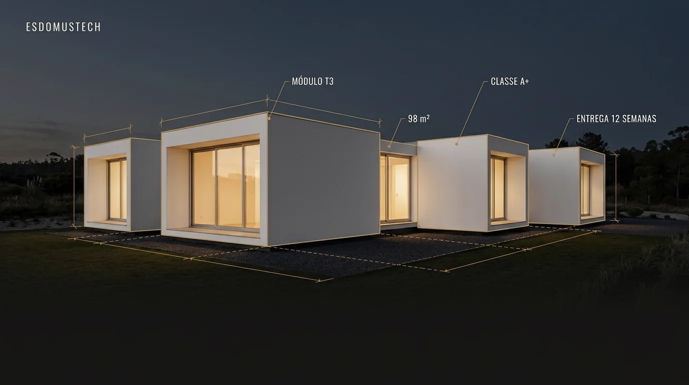

01 Imobiliário modular
EsDomusTech
Site institucional para uma marca de casas modulares no Porto. Tem de convencer famílias que ainda estão a comparar opções de que esta não é uma construtora qualquer — e levá-las a pedir orçamento.

01 O projeto
O que é
Quem chega ao site está em fase de pesquisa: quer perceber se a empresa é credível, ver obras feitas, entender o processo e ter uma ideia de preço. O site responde a isso por ordem, e cada página termina no mesmo sítio — o pedido de orçamento.
A identidade visual chama-se Structural Elegance: dourado arquitetónico sobre preto e branco-sujo, títulos em Oswald, cantos a 90° em toda a interface e quase nenhuma sombra. Precisão em vez de suavidade, porque é isso que a marca vende.
02 Funcionalidades
O que faz
- Homepage com slider de projetos, números da empresa e prova social
- Portfólio com várias vistas — grelha, lista, filtros por categoria e página de detalhe por obra
- Comparador antes/depois arrastável
- Páginas de serviços, sistema construtivo camada a camada, preços indicativos e FAQ
- Formulário de orçamento com validação
- Sitemap dinâmico e metadados por página para SEO
03 Tecnologia
A stack
Frontend
- React 19 + TypeScripttipagem de ponta a ponta
- TanStack Start / Routerrotas com renderização no servidor, boa para SEO
- Vitebuild e servidor de desenvolvimento
Interface
- Tailwind CSS 4com tokens de cor em custom properties
- shadcn/ui (Radix)componentes acessíveis, usados pontualmente
- Framer Motionanimações de entrada e do slider
Conteúdo e dados
- SanityCMS para gerir conteúdo sem mexer no código
- React Hook Form + Zodformulários com validação
Infra
- Vercelalojamento e deploy
- Vercel Analyticsmétricas de tráfego
04 Porquê assim
Decisões técnicas
Conteúdo separado da interface
Serviços, projetos, FAQ e equipa vivem numa camada de dados própria. Mudar um texto nunca obriga a mexer num componente.
Tokens como única fonte de cor
Nenhum componente tem cores escritas à mão. A paleta muda num só sítio e o site inteiro acompanha.
Renderização no servidor
Páginas entregues já com conteúdo, para os motores de busca lerem tudo à primeira.